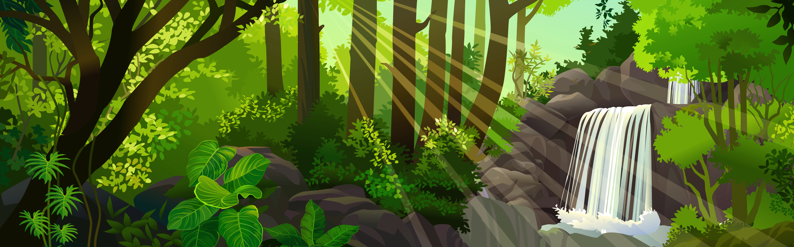

Um dia desses, dentro de um livro da biblioteca da escola, eu descobri uma carta antiga sobre uma cidade perdida, escondida por riquezas e belezas naturais. Nessa carta, a autora deixa algumas pistas para encontrar essa cidade e eu decidi segui-las!

Você começa sua jornada no Rio de Janeiro, subindo o Pico da Tijuca ao amanhecer para encontrar a primeira pista.

Em Pernambuco, você visita a histórica cidade de Olinda. Na carta, uma das pistas indica que para localizar a entrada para a cidade perdida você deve procurar a próxima pista em um dos pontos turísticos da cidade. Por qual você começa?

No topo do Pico da Tijuca, você encontra uma antiga inscrição apontando que a próxima pista está localizada no Amazonas.

Você decide que a aventura é grande demais e volta para casa, mas sempre se pergunta o que teria encontrado.

Nas igrejas de Olinda, você descobre um mapa antigo escondido atrás de um altar, apontando que a próxima pista está no Amazonas.

Explorando as praias, você encontra uma caverna escondida, mas ela leva a um beco sem saída.

No Amazonas, a busca pela cidade perdida se intensifica. Você se depara com um rio bifurcado.

De volta às igrejas, você finalmente encontra o mapa antigo. Agora, para o Amazonas!

O rio à esquerda leva você a uma cachoeira escondida com inscrições antigas que revelam a entrada da cidade perdida.

O rio à direita termina em uma área pantanosa. Apesar de belas vistas, não há sinais da cidade perdida.

Dentro da cidade perdida, você descobre tesouros inimagináveis e decide se dedicar a estudar e preservar este lugar.
Parabéns! Você encontrou a cidade perdida!

Retornando e escolhendo o rio à esquerda, você finalmente encontra a cachoeira escondida e as inscrições que levam à cidade perdida.